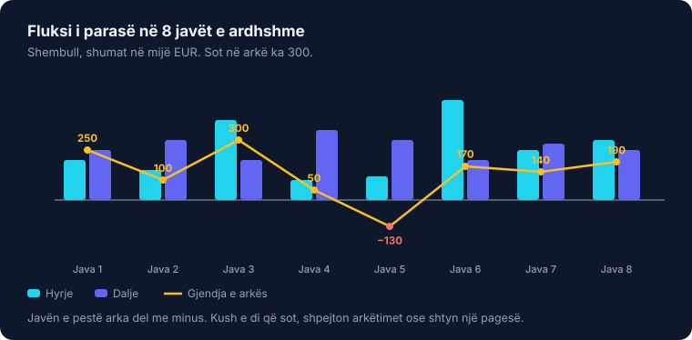
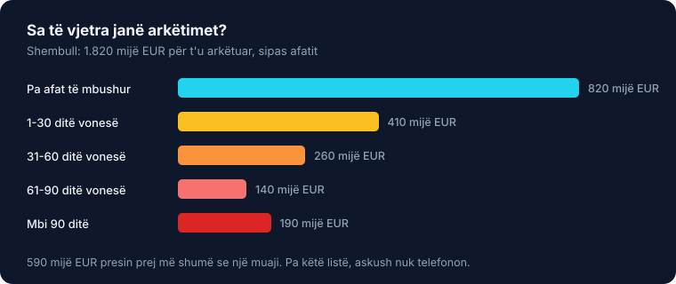

Pse duhet një program për financat dhe kontabilitetin?
Shumë pronarë kompanish thonë „kontabilitetin e kemi“ dhe e kanë fjalën për kontabilistin e jashtëm. Kontabilisti regjistron faturat, dorëzon deklaratat tatimore, mban librat ligjorë. Por përgjigjja e pyetjeve „kujt do t'i paguajmë këtë javë, nga kush do të arkëtojmë, a e nxjerrim fundin e muajit“ nuk gjendet tek ai. Këto pyetje presin përgjigje brenda kompanisë, më së shpeshti në kokën e pronarit dhe në një skedar Excel.

Ka dy kontabilitete të ndryshme
I pari është kontabiliteti zyrtar, që mbahet për shtetin. Shikon të kaluarën, rregullat i ka të qarta dhe e drejton kontabilisti. I dyti është evidenca që kompania mban për të drejtuar veten. Quhet kontabilitet i brendshëm ose ndjekje financiare. Shikon ditën e sotme dhe javët që vijnë.
Për të parin, secili e ka vënë disi punën në rregull, sepse është i detyrueshëm. I dyti, në shumicën e kompanive, është i shpërndarë. Kartelat e klientëve janë në një Excel, çeqet në një bllok shënimesh, lëvizjet e bankës në e-banking, këstet e kredisë në një skedar tjetër. I vetmi vend ku shihen të gjitha bashkë është mendja e pronarit.
Sot ka para në arkë. Po pas tri javësh?
Në shumicën e kompanive, ndjekje financiare do të thotë të shohësh llogarinë bankare në mëngjes. Nëse ka para në llogari, punët quhen në rregull. Gjendja e llogarisë tregon ditën e sotme. Nuk tregon çekun që i vjen afati javën tjetër, pagat e mesit të muajit, pagesën e TVSH-së dhe arkëtimin që klienti po e vonon.

Kjo është arsyeja pse edhe kompanitë me fitim mbeten pa para. Shitja është bërë, fatura është lëshuar, në letër është fituar. Por nëse arkëtimi vjen pas gjashtëdhjetë ditësh dhe pagesa e furnitorit duhet bërë pas tridhjetë, zbrazëtia mes tyre duhet mbuluar nga diku. Kompania që e sheh këtë pesë javë përpara, bën një bisedë të qetë me bankën. Ajo që e vëren ditën e fundit, merr kredinë më të shtrenjtë që gjen.
Paratë që nuk arkëtohen
Te kompanitë me të cilat flasim, gjendja më e shpeshtë është kjo: dihet kush sa borxh ka, por nuk dihet prej kur e ka. Në listë shkruhen njëzet klientë dhe shumat përbri. Nga lista nuk kuptohet se kujt i ka kaluar afati dhe kush nuk ka paguar prej tre muajsh.

Kur askush nuk telefonon për një faturë me afat të kaluar, as klienti nuk nxiton. Ai paguan atë që ia kërkon i pari. Një listë e thjeshtë që tregon vjetërsinë e arkëtimeve dhe telefonatat e rregullta një herë në javë e shkurtojnë dukshëm kohën e arkëtimit.
Një humbje e ngjashme ndodh te faturimi. Puna është dorëzuar, por për të lëshuar faturën dikush duhet të mbledhë fletëdërgesat, dhe kjo mbetet për fund të muajit. Meqë fatura lëshohet vonë, afati fillon vonë dhe paratë vijnë vonë.
Çfarë bashkon programi i financave?
I mbledh pjesët e mësipërme në një regjistër të vetëm. Kur lëshohet fatura e shitjes, ajo kalon vetvetiu në kartelën e klientit dhe në kalendarin e afateve. Kur futet fatura e blerjes, shtohet në listën e pagesave. Në të njëjtin kalendar rrinë edhe çeqet, kambialet, këstet e kredisë dhe pagat.
Kur këto regjistrime janë bashkë, pasqyra e parave për javët e ardhshme del vetvetiu. Nuk keni nevojë të pyesni askënd „çfarë do të paguajmë këtë muaj“.
Faturimi lidhet me shitjen. Porosia e dorëzuar kthehet në faturë me një klikim dhe dërgohet si faturë elektronike. Rastet kur puna ka mbaruar, por fatura nuk është lëshuar, dalin në ekran si listë më vete.
Lëvizjet e bankës barten në sistem dhe përputhen me regjistrimet. Shihet cili arkëtim i përket cilës faturë dhe çfarë janë lëvizjet që nuk përputhen.
Edhe shpenzimet klasifikohen. Sa shpenzon cili departament, cili projekt, cili mjet, del në fund të muajit me pak klikime. Nga këtu e tutje tema lidhet me matjen e përfitueshmërisë së projektit.
Si ndahet puna me kontabilistin?
Evidenca e mbajtur mirë brenda kompanisë ia lehtëson punën edhe kontabilistit. Në vend që në fund të muajit t'i dërgoni një qese me fatura, i kaloni regjistrime të klasifikuara dhe të përputhura. Pasqyrën që vjen prej tij mund ta krahasoni me evidencën tuaj.
Në shumicën e kompanive nuk është nevoja të ndryshohet programi që përdor kontabilisti. Sistemi i kompanisë i nxjerr të dhënat në formën që i përshtatet programit të tij. Ka edhe kompani që duan ta marrin krejt brenda kontabilitetin zyrtar, por ky është një vendim më vete dhe nuk ka pse të jetë hapi i parë.
Kur bëhet i nevojshëm?
- Nëse numri i faturave të lëshuara dhe të marra në muaj e ka kaluar njëqindëshin.
- Nëse shisni dhe blini me afat pagese.
- Nëse kalendari i çeqeve, kambialeve ose kësteve të kredisë është në bllokun e një njeriu të vetëm.
- Nëse ju merr gjysmë ore të mësoni se kush prej sa ditësh ju ka borxh.
- Nëse gjendjen e parave për muajin e ardhshëm nuk e thoni dot me shifra.
Nga të fillohet?
Dy temat që japin rezultat më shpejt janë kartelat e klientëve e furnitorëve dhe ndjekja e afateve. Futni në sistem gjendjet e klientëve dhe furnitorëve, faturat e hapura dhe afatet e tyre. Edhe vetëm kaq mjafton që të shihni listën e arkëtimeve dhe pagesat e javëve të ardhshme.
Hapi i dytë është lidhja e faturimit me shitjen, i treti përputhja me bankën. Klasifikimi i shpenzimeve dhe buxheti mund të mbeten për në fund.
Sa u përket mjeteve, ka programe që bëjnë vetëm faturim dhe kontabilitet të thjeshtë, sisteme ERP që punojnë bashkë me shitjen dhe magazinën, dhe zgjidhje që qëndrojnë mes tyre. Nëse shitja, magazina dhe blerja mbahen në një sistem tjetër, financa duhet të komunikojë me to. Përndryshe çdo faturë futet dy herë. Kur zgjedhim, ne shohim së pari këtë lidhje.
Pyetje të shpeshta
Kemi kontabilist. A na duhet edhe kjo?
Janë dy punë të ndryshme. Kontabilisti mban regjistrimet ligjore të periudhës së kaluar. Ndjekja financiare tregon gjendjen e sotme të arkëtimeve, borxheve dhe parave dhe duhet për vendimet e përditshme të kompanisë.
Përdorim një program faturimi dhe kontabiliteti të thjeshtë. A nuk mjafton?
Për ndjekjen e kartelave të klientëve dhe të faturave mund të mjaftojë. Zakonisht çalon te lidhja me shitjet, magazinën dhe projektet. Nëse të njëjtin informacion e fusni në dy sisteme, ose pasqyrën e parave e përgatitni ende në Excel, ka ardhur koha të shihni një hap më lart.
A duhen bartur regjistrimet e vjetra?
Jo të gjitha. Mjaftojnë faturat e hapura, gjendjet aktuale të klientëve e furnitorëve dhe çeqet e kambialet që nuk u ka ardhur afati. Regjistrimet e vjetra, të mbyllura, mund të mbeten aty ku janë.
Shërbimet tona të lidhura: zgjidhje ERP për biznese të vogla e të mesme, këshillim për transformimin dixhital.
Sa ju kushton në vit ndjekja me skedarë?
Llogaritni koston vjetore të futjes së dyfishtë, raporteve të përgatitura me dorë dhe gabimeve nga skedarët.
Hap kalkulatorinLe ta nxjerrim bashkë pasqyrën e parave
Le t'i shohim bashkë hyrjet dhe daljet e tetë javëve të ardhshme.
Le të flasim për projektin tuaj